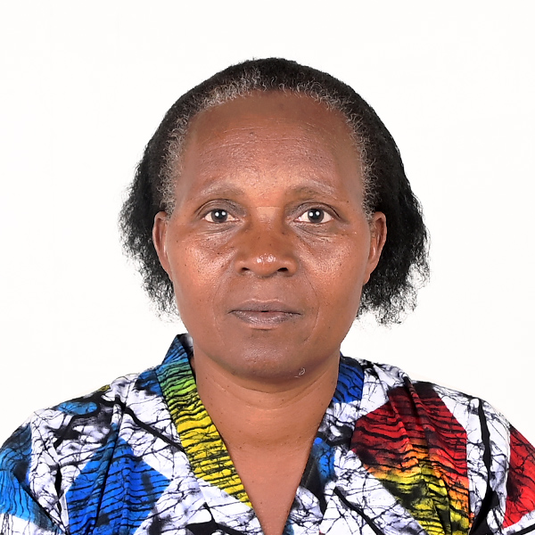

Our Leadership Team

Fr. Justin Zigiranyirazo
Co-Founder & Visionary
Fr. Justin is a dedicated leader passionate about empowering Rwandan communities through spiritual and practical initiatives.

Philomene Ugirimari
Co-Founder & Program Director
Philomene ensures the successful implementation of KCDI programs, transforming lives for the better.
Cyuzuzocyisezerano Samuel
Program Beneficiary & Advocate
A shining example of KCDI’s success, Grace inspires others to strive for a better future.

Ishimwe halellua justine
Program Beneficiary & Advocate
A shining example of KCDI’s success, Grace inspires others to strive for a better future.